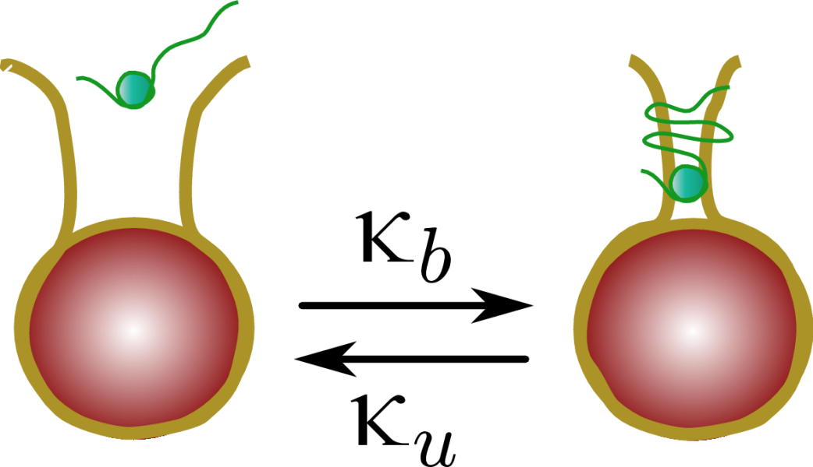
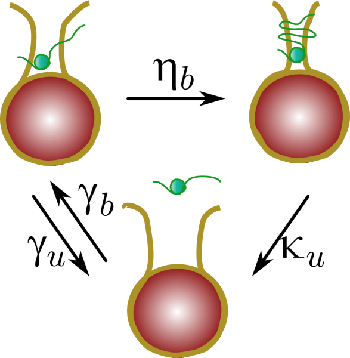
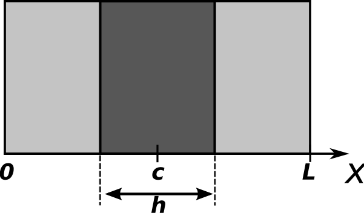

<< go back
Histone H1 fitting-inference GUI
 

Legend for cell configuration. Ratio $r$ is defined as $r=\frac{F_a}{F_0}$ where $F_0$ and $F_a$ is the fluorescence intensity before and after photobleaching, respectively.
Copyright 2015 Carlos Contreras.